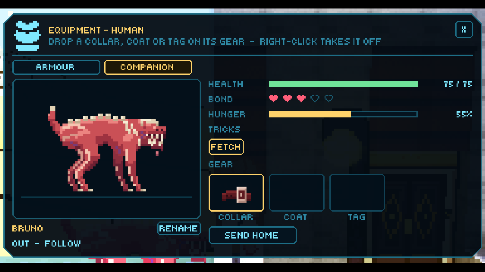
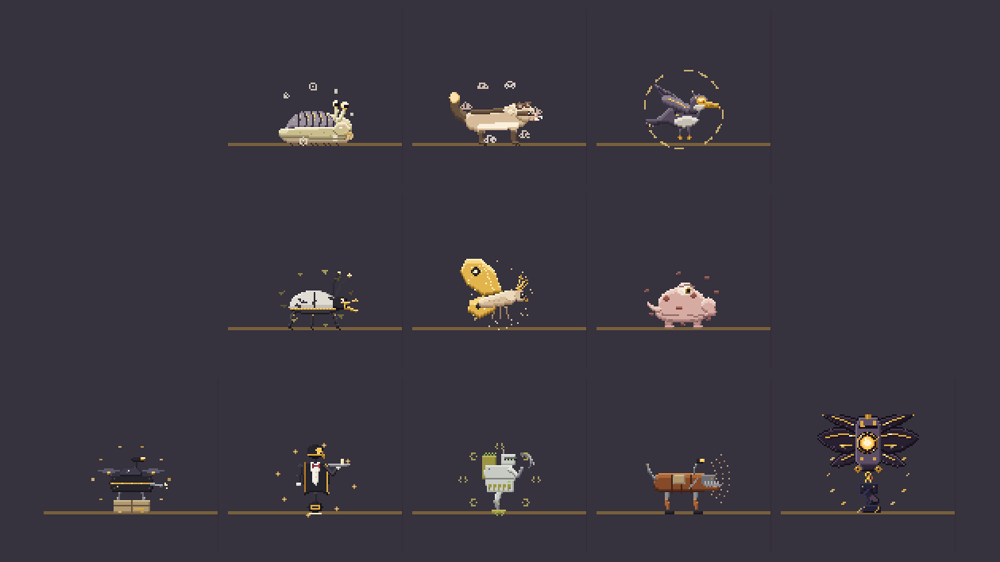
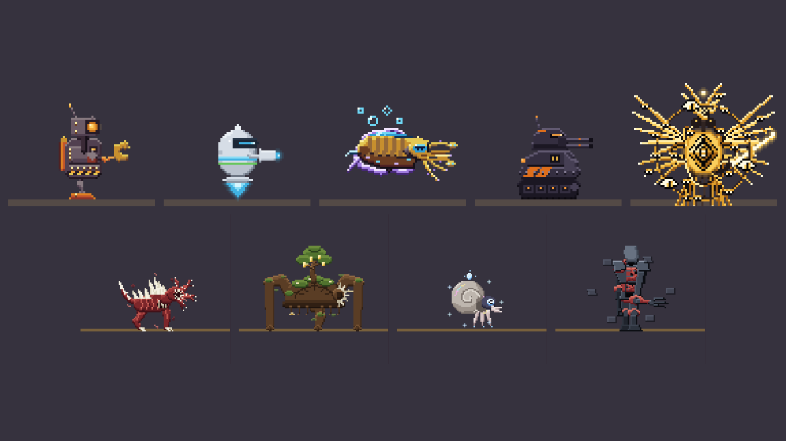
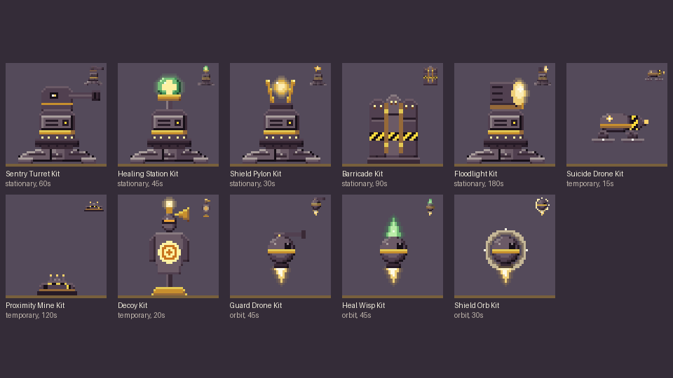

COMPANIONS
Pets and companions for every class, a kennel at the noble pet store, a companion for every tech line, and deployables anyone can put down.
Until now only the inventors had something at their side: the Mechanist's and the Biomancer's own aspects. Now every class can keep a companion, and everyone can put down deployables. Whatever follows you is a companion, whatever you put down is a deployment. You can have one companion and two deployments out at once, and the inventors keep their own aspects on top of that.
PETS // every class

Mouse 4 or F1 tells your companion to follow or stay. It also takes stances: guard a spot, attack one target, passive or aggressive. While something of yours is out, the Ctrl wheel gets a PARTY page with the full orders: follow, stay, guard, attack, recall and its trick. A pet that goes down isn't lost. It's pulled aboard your ship and heals there, much faster with a Med bay, and a Pet Bed in the ship's room helps too.

The noble pet store has a kennel window now. Its cages hold six creatures of Venus Above: the Street Cleaner, the Florest, the Watcher, the Clipper, the Gilt Moth and the Morenth Calf. Each has its own temper, diet, fighting style and tricks, and the Florest even helps your charisma while it's near you. A pet bonds with you as you feed it, fight beside it and rest, up to five hearts, and its tricks unlock as the bond grows. Let it go hungry and it slows down. Venus Above has robots too, built at the Workshop or bought in their districts: the Courier Drone, the Valet, the Field Hand, the Patchwork Mutt, and the slums' own Enforcer. Machines don't eat; a downed one is hauled aboard your ship for repairs.
Every companion has a COMPANION tab in the armour window, next to your own gear: its picture and name (you can rename it), health, bond, hunger, tricks, slots for a collar, coat and tag, and buttons to feed it, send it home or call it out.
TECH LINES // a companion for each

Every tech line has a companion of its own. The machines come in a Companion Core: Scrap's Tinker, a repair bot; Corpo's Aide, a sleek assistant drone; Brassdan's Brass Cuttle, a brass cuttlefish that swims through the air and hides until it strikes; Military's Bulwark, an armoured gun drone that draws fire; and the Lattice Herald, a biblically accurate angel with six wings, three wheels of eyes and a flaming sword. The living ones are grown: Fleshmeld's Graft Hound, raw meat with a face of toothed tendrils; Wooded's Rootback, a headless tree turtle that pins foes with thorns; Celicra's Choir Shell, a floating nautilus that heals you; and Hidden's Husk, a tall empty shell lined with meat. Their parts are at the Workshop and the Vat too, so the inventors can build them into their own aspects.
TAMING // and hacking
Animals can be tamed and machines can be hacked. Point at one and press F: an animal wants the right food in your hand or to be beaten down first, and every miss makes the next try likelier. Machines are never tamed, only hacked, and that takes the new Hacking Tool, a Mechanist, or the Nano Mage's new Hack rune. Hack a slums Enforcer and it follows you. Venus has few wild animals for now, so taming is the groundwork for what comes later.
DEPLOYABLES // every class

Anyone can carry deployable kits: a sentry turret, a healing station, a shield pylon, a barricade, a floodlight, a suicide drone, a proximity mine, a decoy, and three that circle you (a guard drone, a heal wisp and a shield orb). Select one and a ghost of it sits at the cursor, green where it fits and red with the reason where it doesn't. Click and it unfolds. Two can be out at once, and an unhurt one packs back into its kit.
On top of those, every tech line has five kits of its own, each with its own rule. Scrap kits leave a heap you can salvage the kit from. Corpo kits link up when two share a lane. Military guns fire faster at enemies you've hit. Brassdan kits are wound up, fast at first and slower as they wind down, and slow whatever they hit. Lattice kits are remade once after they're wrecked. Fleshmeld kits heal themselves and eat meat. Hidden kits stay unseen until they act. Wooded kits grow from seedling to bloom and get stronger. Celicra kits sing and confuse the foes around them. These are all built, but not every kit has been played yet.